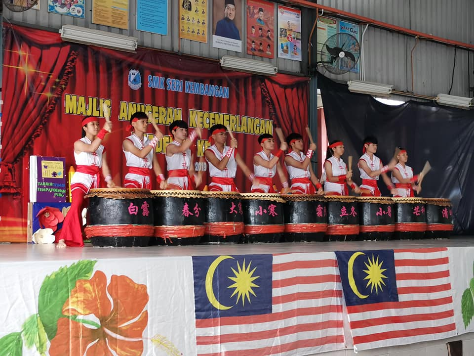

Our History
24 Seasons Drum SMK Seri Kembangan was established on 11 December 2010, founded by Principal Mr. Tay Keng Lee, and the consultant teacher is Mr. Lim Ewe Guan. We often give wonderful performances for the school in school festival celebrations, and have also traveled to China, Vietnam and Taiwan for drum art exchanges.

Exchange to Taiwan

Performance in school